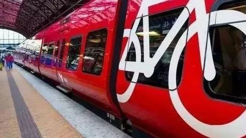

This is our country:
BeijingThe Government's Action Plan for Beijing's Construction of Humanities, Transportation, Science and Technology, Transportation and Green Transportation directly put forward the support strategy for bicycle travel. For example, the establishment and improvement of pedestrian and bicycle traffic service projects; the construction of bicycle lanes and pedestrian walkways network to strengthen the management of road rights; the addition of bicycle parking lots in passenger concentrated areas, relying on rail transit stations and bus hubs, set up about 1000 bicycle rental points. Many enterprises have invested in the establishment of free bicycle parking spaces and bicycle storage racks within their units to alleviate the worries of cyclists who commute to work by bicycle. As early as in the early 1980s, in order to encourage cyclists to commute to work, some units paid 5 yuan a month for repairing and wearing bicycles.
Look at other countries:
Denmark：Building "Bicycle Expressway"
In Copenhagen, half of the residents ride bicycles to work and go to school every day. The city government of Copenhagen has been redesigning streets and formulating bicycle regulations.
But many suburban residents still drive to work for convenience reasons, because the distance to work is too far, the cycling road is too round, the road is too dark, or the road is too old.
The city government of Copenhagen has funded 26 bicycle highways around the capital to encourage people to ride bicycles in and out of Copenhagen.

▲ Bicycle Cars on Copenhagen Metro
Click here to see plans for more countries